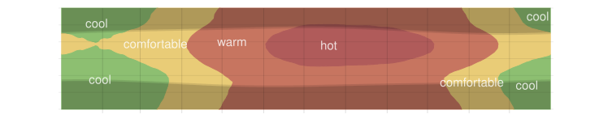
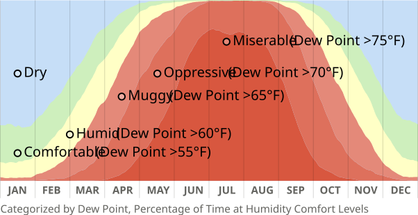

Shenzhen has a humid subtropical climate – hot, muggy summers and more milder, less humid “winters.”
Current
Temperature
Current
Relative Humidity
Current
Dew Point
–
Typical temperature by hour of day, across the year.

Percentage of time at each humidity comfort level (categorized by dew point), across the year.
